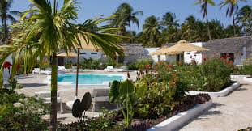

Zanzibar est une île tropicale située à 36 kilomètres au large de la Tanzanie, dans l'océan Indien. La destination typique du soleil et de la plage, à cause des deux, elle en a beaucoup. Zanzibar est souvent utilisé par les voyageurs en safaris en jeep au Kenya et en Tanzanie pour se reposer pendant les derniers jours de voyage; les couples de mariés à la recherche de leurs hôtels de rêve et les routards voulant la plage, des prix abordables et une bonne ambiance. Êtes-vous l'un d'entre eux?
Cette zone est celle qui possède les meilleures plages (il n'y a pas de lagon de corail et la marée n'est pas aussi basse que dans le sud) et le plus grand nombre d'hôtels à prix moyens et bas. En d'autres termes, le choix préféré des routards et des voyageurs indépendants à petit budget. De nombreuses activités nautiques et beaucoup d'ambiance dans les bars et restaurants sur la plage. Le village de Nungwi et ses barges échouées sur la plage à marée basse est un spectacle visuel et un régal pour les amateurs de photographie.
C'est la deuxième plus grande île de l'archipel. Il n'est accessible que par des avions légers depuis Zanzibar lui-même ou depuis Dar es Salaam; il y a aussi un service de ferry. Bon si vous cherchez quelque chose de plus pur et de moins colonisé. Il y a à peine cinq ou six hôtels, beaucoup plus de mangroves que de plages et une infrastructure minimale. Conseillé pour ceux qui recherchent la plongée, la pêche ou un séjour plus en contact avec la nature.
Le restaurant le plus original de Zanzibar (et sûrement l'un des plus curieux du monde) se trouve à Pingwe, sur la côte est, à une heure de Stone Town. Son emplacement, sur un morceau de l'ancien récif de corail isolé au milieu de la plage, est indéniable. Lorsque la marée monte, ils doivent vous emmener en bateau. Il n'a qu'une douzaine de tables; (Il est indispensable de réserver à l'avance). Maintenant, il est également ouvert pour les dîners.